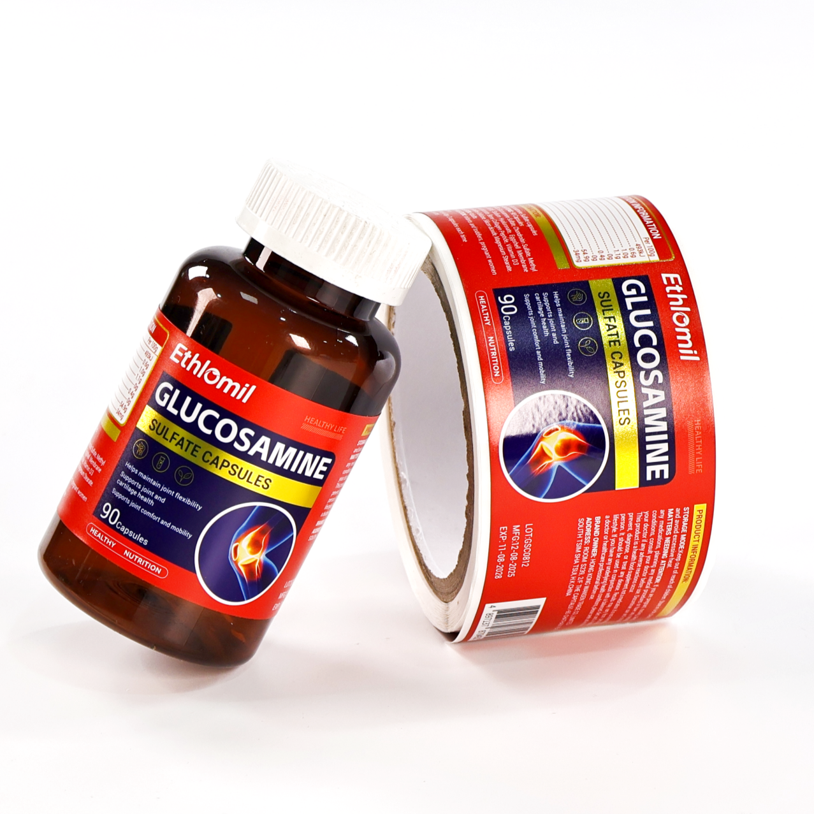
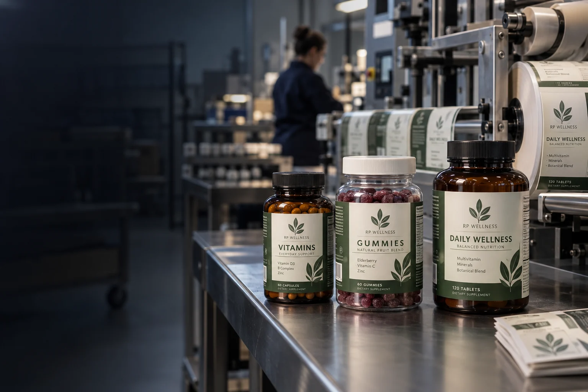
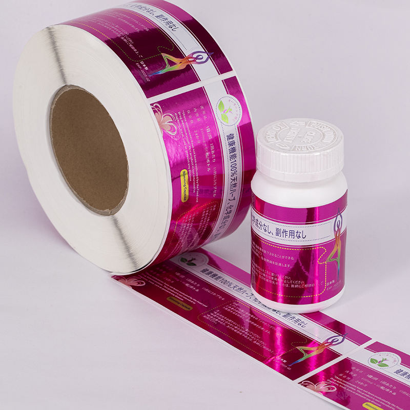
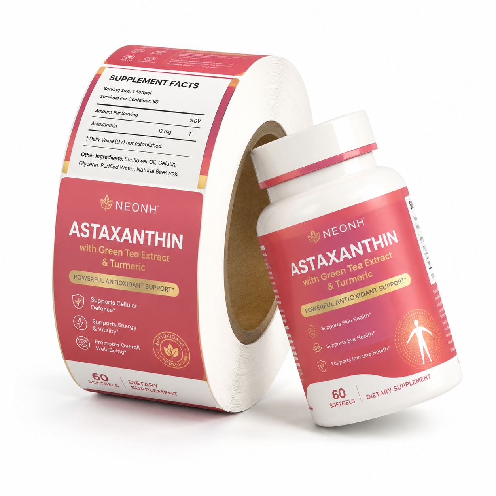
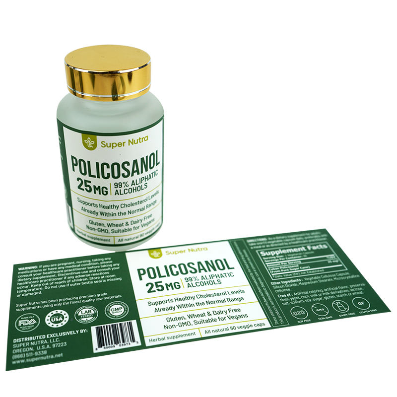
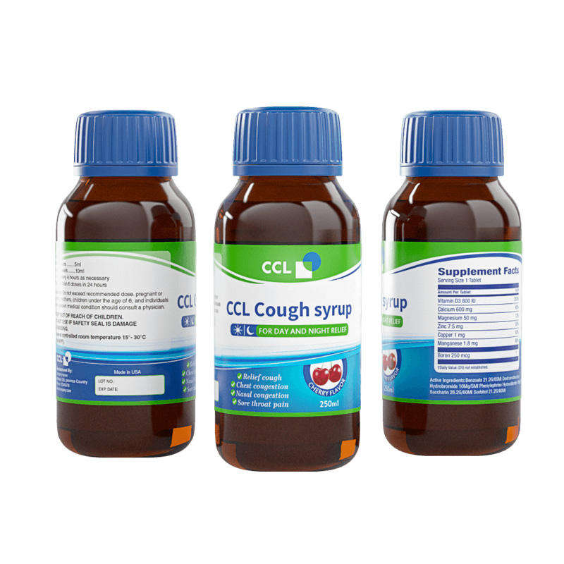
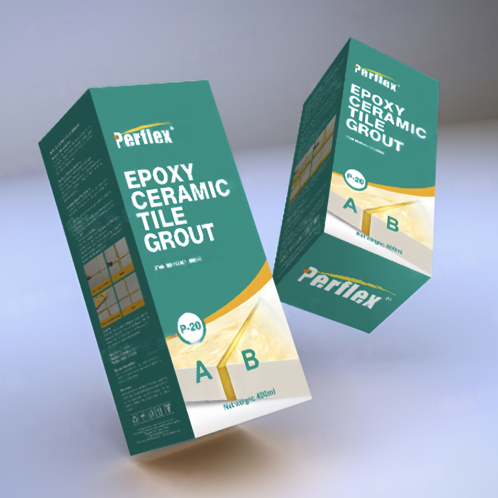

Custom Vitamin Bottle Labels
Discuss this packaging format with your dimensions, artwork and pieces per design. Construction and availability are confirmed in the project quote.
Discuss This FormatBring your supplement packaging project to RP Labels with the container, approved copy and quantity for each SKU. Whether you are planning vitamin and capsule bottles, gummy jars or powder packaging, custom supplement labels start with the usable label area and the way they will be applied. Discuss your preferred materials, finishes and supply format so the written quote can define the proposed print scope.

Start with the container and the information it needs to carry:
| Packaging | Fit and layout details to check |
|---|---|
| Vitamin or capsule bottle | Straight-wall height, shoulder and base clearance; wrap or front-and-back layout; room for approved text and barcode |
| Gummy jar | Usable body area and any taper; body label plus separately specified lid or closure label |
| Powder tub | Body dimensions across the label area, taper and handling flex; front display, information panels and application method |
Use the supplement bottle size guide to record measurements against the actual container reference. For a straight round body, the label quote planner can help prepare an initial size brief. Tapered or irregular shapes need a fit discussion using the actual package.

Supply the version of the product wording your team has approved for its intended market, including the product identity, facts panel, ingredients, directions, warnings and company details as applicable. Reserve space for the barcode and any lot or date fields your packer will add later.
Review the layout at actual size, with the front display and information panels positioned as they will sit on the container. If the copy exceeds the available space, resolve the panel or packaging choice before releasing artwork. The small-bottle information panel guide helps frame that decision.
Your team approves the wording, product claims and market requirements. Prepress review addresses the agreed print layout; it does not provide regulatory approval.

Share the look and feel you want alongside the handling environment: dry shelf display, splashes, oils, rubbing, refrigeration or frequent transport. Paper, BOPP and other film requests should be compared with the proposed adhesive, print and protective finish, rather than selected by material name alone.
The paper versus BOPP guide can help you prepare a comparison brief. Ask which candidate constructions are available for your project and agree relevant checks on the actual container before approving a material sample.
Give each design its own line, even when several share the same bottle and label size. This makes the quantity mix clear and keeps artwork changes visible.
| Design / SKU and revision | Pieces required | Shared size / container reference | Material or finish exception | Delivery destination |
|---|---|---|---|---|
| Your design reference | Your quantity | Your size or reference | State any difference | Country / postal code |
For a trial run or varied SKU mix, the quantity planning guide explains questions to ask before buying extra stock. Minimums and pricing are established for the proposed process and each design mix in the written quote.
For reorders, reference the previously approved artwork and specification, and list changes to copy, container, material, finish or quantity. Ask for the current terms against that revision.
Tell us whether your team will apply labels by hand or a co-packer will use a labeling line. Request the preferred roll or sheet format for confirmation with the proposed label construction.
For machine application, obtain the operator's required unwind view, core size, maximum roll diameter, label spacing and orientation. Include the equipment reference and any later lot or date printing requirements. These details should be agreed with the packer before production.
If the packaging needs body, lid and carton labels, list each component and its quantity separately. State whether a lid label is decorative or needs visible opening evidence; the latter belongs in a security seal brief. Identify container or carton sourcing separately from the printed-label request.
Send the container reference and measurements, approved text and artwork, the SKU list, application requirements and delivery destination. If the design is still in progress, include the available files and explain what help you need.
Confirm design assistance, digital proofs and physical samples, including any charges, in the project offer. A digital proof supports layout review; fit, handling and application checks need the appropriate physical sample. Ask for timing and delivery terms alongside the agreed specification.
Prepare your supplement label brief to discuss the packaging, quantity mix and artwork together.
Selected visual references for preparing your packaging brief. Images do not establish production capability, certification or tested performance; confirm the proposed scope and sample checks in writing.

Discuss this packaging format with your dimensions, artwork and pieces per design. Construction and availability are confirmed in the project quote.
Discuss This Format
Discuss this packaging format with your dimensions, artwork and pieces per design. Construction and availability are confirmed in the project quote.
Discuss This Format
Discuss this packaging format with your dimensions, artwork and pieces per design. Construction and availability are confirmed in the project quote.
Discuss This Format
Discuss this packaging format with your dimensions, artwork and pieces per design. Construction and availability are confirmed in the project quote.
Discuss This Format
Discuss this packaging format with your dimensions, artwork and pieces per design. Construction and availability are confirmed in the project quote.
Discuss This Format
Discuss this packaging format with your dimensions, artwork and pieces per design. Construction and availability are confirmed in the project quote.
Discuss This FormatCheck pack geometry, information-panel space and barcode quality before releasing artwork.